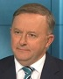

First created: 20190906
Last modified: 20200216
Anthony Albanese discusses the NSW Labor donation scandal.
Original 7.30 interview
(archived version)
Anthony Albanese, thank you for coming in.
Good to be with you, Leigh.
[...]
[...]
On another matter, the corruption hearings into donations to the New South Wales Labor Party are continuing.
The reaction of federal MPs, including yourself, has been shock and disbelief, as if the party's headquarters and its elected MPs are church and state. That's a bit hard for the average voter to believe, isn't it, that Labor MPs have no idea about the culture or operation of your party headquarters and the way it gets money?
Well, quite clearly, people didn't know about it, quite frankly, Leigh.
{Except Kaila Murnain of course, but she's dead to us now, so she doesn't count as a person.}
If you knew about it you would have been reporting on it, on this very program.
{All right Mr Smarty-pants it's just the first question.}
But I'm not a key elected official of the Labor Party.
I didn't even know this function had occurred. I'd never met the particular official and didn't know he existed, who was involved in this, and of course, Kaila Murnain has paid a price. She's been suspended from her position.
What we need to do is to make sure that the ICAC can undertake its work.
There's clearly a need for structural reform in the New South Wales branch, to make sure this can never happen again.
Shouldn't there be an audit, not just of the New South Wales branch, but of all branches, because if it's going on here, how do we know it's not going on elsewhere?
{Yes of course there should, but I'm not allowed to say that. So cue swipe at the Coalition:}
Well, the Labor Party federally, of course, we, unlike the Government: we declare all donations above $1,000 which is what we think the threshold should be.
That's been resisted by the current Coalition Government, and of course in New South Wales, 10, no less than 10 Liberal Party MPs either had to resign from Parliament or go to the crossbench [...].
But we're talking about Labor. Why not be transparent and have an audit? Bring out independent auditors.
We have processes
{which we would like to keep in house for obvious reasons}.
We have an audit process.
Well, it clearly hasn't worked.
We have an audit process of our federal funding as a national party.
What we need to do, is, in New South Wales
{and definitely not in Federal Labor},
there clearly needs to be a proper examination of how this occurred, and a restructuring to make sure that it can't occur again.
Why just New South Wales though?
But we need to ... because it is in New South Wales that this has occurred
{and assuredly, I say to you, not in Federal Labor}.
But how do you know?
In terms of, federally, ... Because federally we have an absolutely strong audit process
{although if you asked me to explain exactly what makes it stronger than the New South Wales branch's audit process, I wouldn't be able to}.
Is the party culture to do whatever it takes to get as much money as possible through the doors?
{Oh yes, and it's one of the few things for which there's bipartisan consensus too.}
Well, look, it's up to the New South Wales branch officials to comment and they've been doing that, of course, before the ICAC and that will continue to take place over coming weeks
{and until it's over I shall be using the nifty "I can't comment on matters relating to an ongoing investigation"}.
We need to not pre-empt that, Leigh. It's important; one of the issues is re political interference in proper processes.
There is a process, the ICAC, and what we shouldn't do is try and politically interfere with that while that process is ongoing.
{However, if we are talking about political interference in the form of donations from those linked to the Chinese Communist Party, I think we agree with the Liberals: How good's money?}
[...]
[...]
Anthony Albanese, thank you.
Thanks.